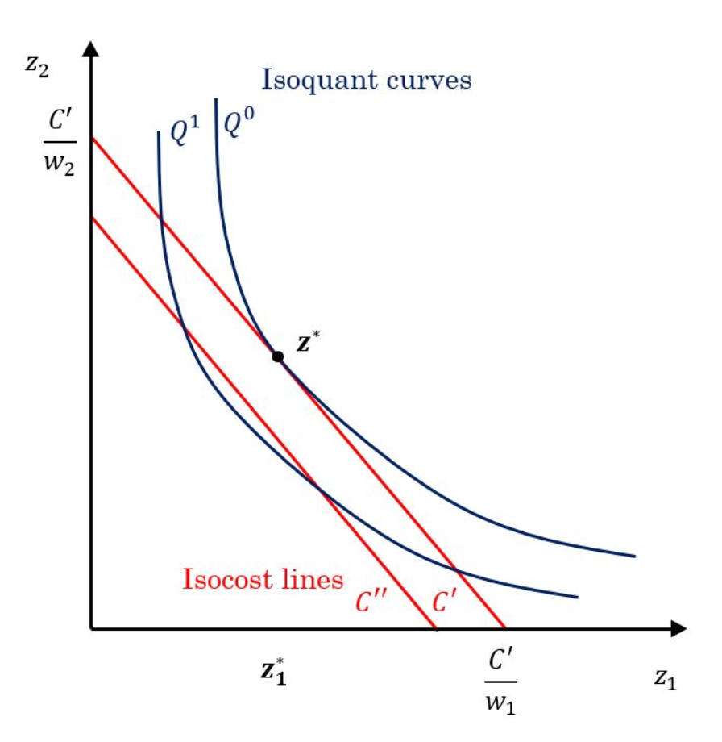
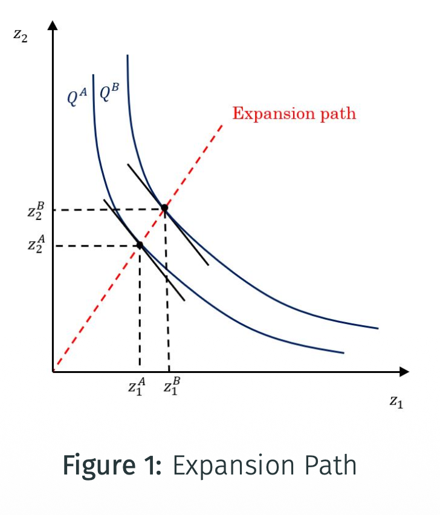
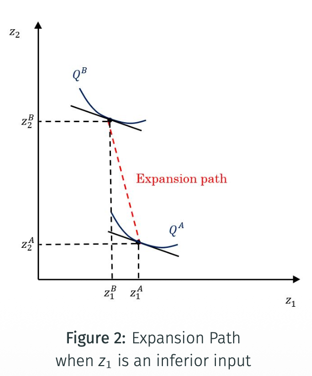
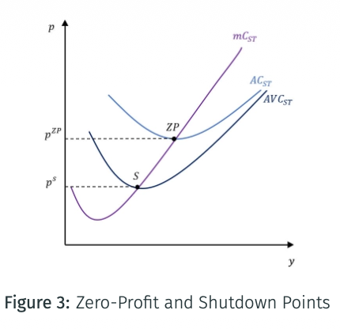
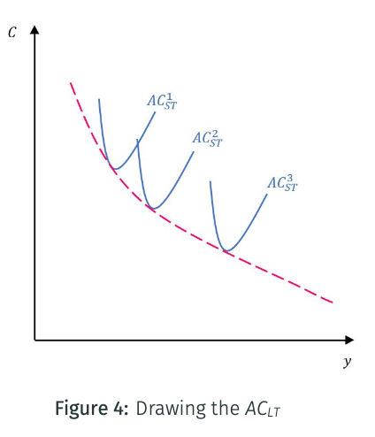
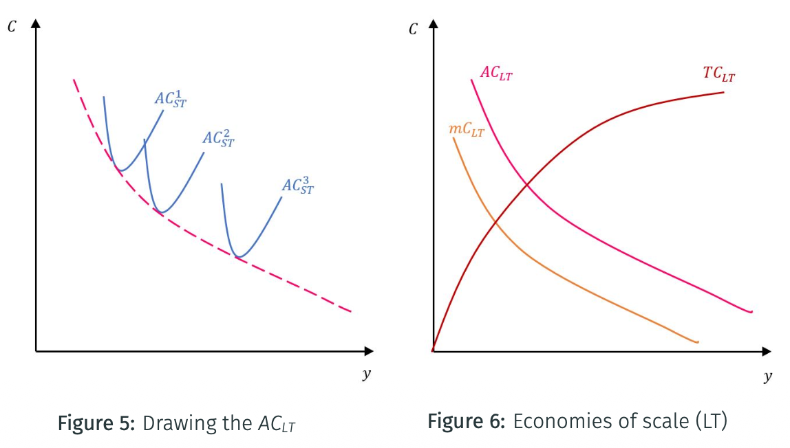
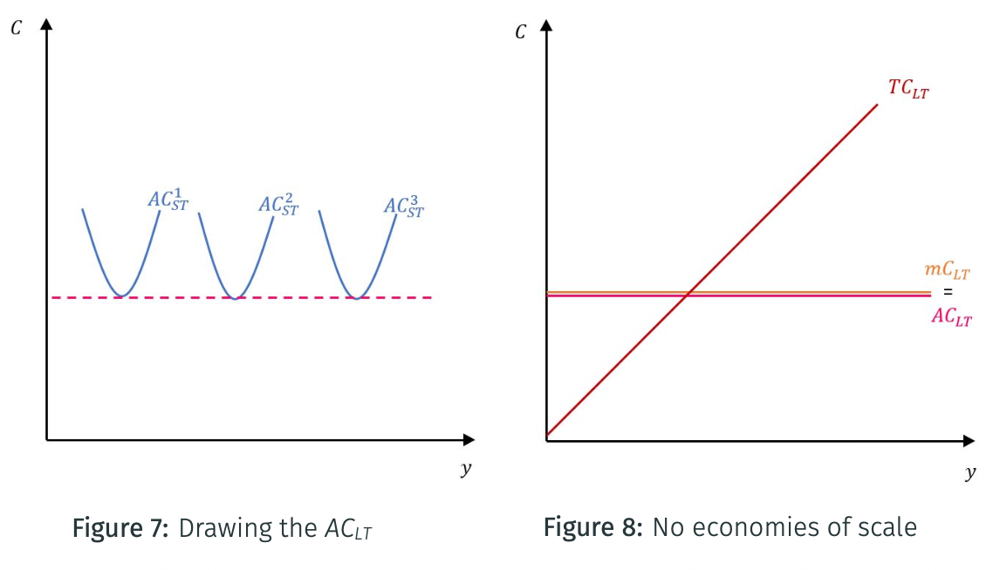
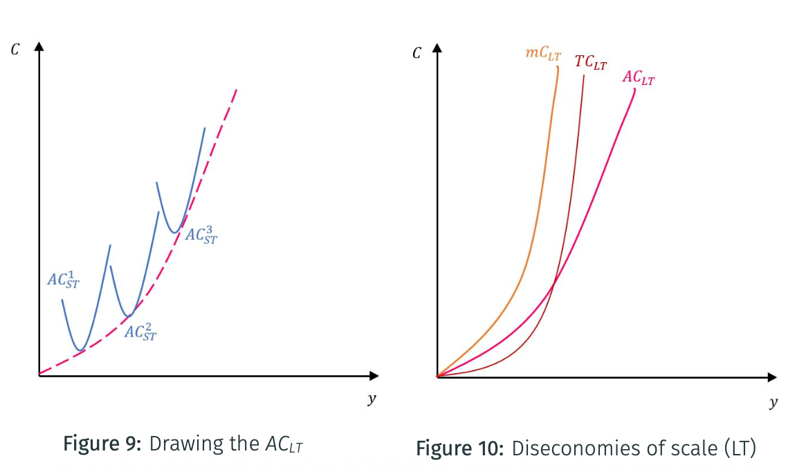
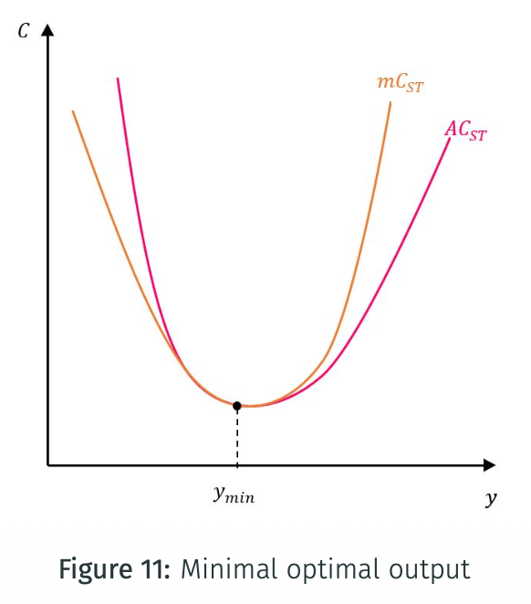

MICRO › Producer Theory › 3. Cost-Minimization and Cost Functions
Part III
Part III — Producer Theory
3. Cost-Minimization and Cost Functions
Input choice, short-run costs, and long-run costs.
3 · Cost-minimization problem
The Cost Function
The cost function associates to an output target $\bar y$ the minimum cost of producing it:
$$C(w,\bar y)=\min_z\;w\cdot z
\qquad\text{s.t.}\qquad f(z)=\bar y.\tag{4}$$
It is the value function of the cost-minimization problem.
Properties of the cost function
If $f$ is continuous and strictly increasing in $z$, the cost function has the following properties.
At zero output
Cost is zero when $\bar y=0$.
Continuity
The cost function is continuous.
Monotonicity
Cost increases in $\bar y$ and is non-decreasing in $w$.
Homogeneity in $w$
It is homogeneous of degree 1 in $w$: if all input prices double, total cost doubles.
Concavity in $w$
Cost rises more slowly than input prices because the firm can substitute between inputs. The firm never pays more than the weighted average of the two costs.
Cost-Minimization Problem
Assume that $f$ is strictly quasi-concave and twice continuously differentiable. The long-term cost-minimization problem is:
$$\min_z\;w\cdot z
\qquad\text{s.t.}\qquad f(z)\geq\bar y.\tag{5}$$
Conditional input demand. The conditional input demand $z_C(w,\bar y)$ is the solution. It is conditional because the firm chooses its inputs subject to reaching the given output level $\bar y$. The cost function $C(w,\bar y)$ is the value function of this problem.
Properties of conditional input demand
Prices scaled together
If $f$ is quasi-concave and twice continuously differentiable, $z_C(w,\bar y)$ is homogeneous of degree 0 in $w$. Scaling all input prices by the same factor changes total cost but not the relative input quantities.
Under constant returns to scale
$$C(w,\lambda\bar y)=\lambda C(w,\bar y),$$
$$z_C(w,\lambda\bar y)=\lambda z_C(w,\bar y).$$
Producing $\lambda$ times more output requires exactly $\lambda$ times each input, and total cost rises proportionally.
Solving graphically

Cost minimization: isoquants, isocost lines, and the tangency $z^*$.
Choose the lowest isocost for the target isoquant
Isoquant curves show combinations of inputs producing the same output. Isocost lines show combinations of inputs with the same total cost.
For a given output level, the cost-minimizing bundle is the point $z^*$ on the relevant isoquant that lies on the lowest achievable isocost line.
The isocost lines are parallel straight lines because input prices are independent of the quantity of the inputs. An isocost line is defined by:
Solving the cost-minimization problem means finding the lowest-cost input bundle for a given isoquant. At $z^*$, the slopes are equal:
$$\text{slope isocost}=\text{slope isoquant}.$$
$$-\frac{w_1}{w_2}=-\frac{MP_1}{MP_2},$$
$$\frac{w_1}{MP_1}=\frac{w_2}{MP_2}.\tag{6}$$
Solving with a Lagrangian
As for the consumer’s UMP, the producer’s cost-minimization problem can be written with a Lagrangian:
$$L=w\cdot z+\lambda[\bar y-f(z)].\tag{7}$$
By the Envelope Theorem, the derivative of the value function with respect to a parameter equals the derivative of the Lagrangian with respect to that parameter. Here:
The multiplier $\lambda$ is the rate at which minimum cost increases when the required output $\bar y$ increases.
Link between PMP and CmP
From PMP
The profit-maximization problem gives unconditional input demand $z_\pi(w,p)$. It therefore gives the supply correspondence $y(p,w)=f(z_\pi)$.
Every profit-maximizing input bundle is cost-minimizing for the output it produces.
From CmP
The cost-minimization problem gives conditional input demand $z_C(w,\bar y)$ for a fixed output level.
A cost-minimizing input choice for some output need not maximize profit, unless that output is the profit-maximizing level.
Course note. This distinction is related to technological and economic efficiency, studied below.
The profit-maximization problem can also be written using the cost function:
$$\max_y\;p\cdot y-C(w,y).$$
The supply correspondence $y(p,w)$ solves this problem. It is the output level at which the profit-maximizing input demand corresponds to the conditional cost-minimizing input demand. This formulation is useful when the cost function is known but the production function is not.
Expansion Path
The expansion path is the locus of cost-minimizing input combinations as output varies. A positive slope means that an increase in output raises both inputs.

Expansion path: both inputs increase as output rises.

Expansion path when $z_1$ is an inferior input.
Question raised in class. An expansion path can have a negative slope over part of its range when $z_1$ is an inferior input. In the second figure, output rises from $Q^A$ to $Q^B$ while the cost-minimizing quantity of $z_1$ falls.
01 · Short-term costs
Short-Term Properties of the Cost Function
In the short term, input $z_1$ can vary but $\bar z_2$ is fixed. To produce more output, the firm must adjust $z_1$ within this fixed capacity.
Input prices $w_1,w_2$ are held constant. Subscripts $ST$ and $LT$ mean short term and long term. The notation $MC$ is used throughout for marginal cost.
Less additional input is needed per extra unit of output, so marginal cost falls.
Marginal product falls
More additional input is needed per extra unit of output, so marginal cost rises.
A U-shaped marginal-cost curve arises when marginal product first increases and then decreases. This is a possible pattern, not a consequence of fixed costs alone.
Why does marginal cost equal $w_1/MP_1$?
Start from total cost. With $\bar z_2$ fixed, only the variable input changes:
$$\frac{dTC_{ST}}{dy}=w_1\frac{dz_1}{dy}.$$
Use the production function. Along $y=f(z_1,\bar z_2)$:
For $AVC=VC/y$, use the same calculation with $VC'(y)=MC(y)$.
Why average total cost approaches average variable cost
$$\boxed{AC_{ST}-AVC_{ST}=\frac{FC}{y}}$$
The same fixed cost is spread over more units as output increases. The gap shrinks and tends to zero as $y\to\infty$, if such output levels are feasible. This does not imply that either average cost itself tends to zero.
03 · Produce or shut down?
Zero-Profit and Shutdown Points
For a price-taking firm, choosing how much to produce and deciding whether to produce are two separate steps. Assume fixed costs are unavoidable in the short term and $VC(0)=0$.
The equality identifies an interior candidate. With the usual U-shaped cost curves, use the rising part of marginal cost; then compare its profit with shutting down. If several candidates exist, choose the one with the highest profit.
2. Check whether production covers variable cost
Produce $y>0$
$$\pi(y)=py-VC(y)-FC$$
Shut down
$$\pi(0)=-FC$$
$$\boxed{\pi(y)-\pi(0)=py-VC(y)}$$
Producing is better than shutting down when $p>AVC(y)$, and the firm is indifferent when they are equal. Fixed cost cancels because it must be paid in both cases.
Why can a firm produce while making a loss?
At the chosen positive output, suppose $AVC(y^*)<p<AC(y^*)$. Revenue covers all variable costs and part of fixed cost, so profit is negative but higher than $-FC$.
$$-FC<\pi(y^*)=y^*\big[p-AC(y^*)\big]<0.$$
Shutting down would leave the firm with the entire fixed-cost loss.
3. Identify the two price thresholds
For the standard curves shown below, with attained minima and an optimal output:
Shutdown price
$$\boxed{p^s=\min_{y>0}AVC_{ST}(y)}$$
The lowest price at which production can cover variable cost.
Zero-profit price
$$\boxed{p^{zp}=\min_{y>0}AC_{ST}(y)}$$
The lowest price at which production can cover total cost.
Market price
Short-term decision
Profit
$p<p^s$
Shut down.
$-FC$
$p=p^s$
Indifferent between shutdown and production at the minimum of $AVC$.
$-FC$
$p^s<p<p^{zp}$
Produce; cover variable cost and part of fixed cost.
Negative, but above $-FC$
$p=p^{zp}$
Produce at the minimum of $AC$.
Zero
$p>p^{zp}$
Produce at the profit-maximizing output.
Positive

Short-term shutdown and zero-profit points.
Read the graph in this order
$S$: the minimum of $AVC_{ST}$ gives the shutdown price $p^s$.
$ZP$: the minimum of $AC_{ST}$ gives the zero-profit price $p^{zp}$.
Between the two prices: the firm produces even though its profit is negative.
04 · Long-term costs
Long-Term Properties of the Cost Function
All inputs can now be adjusted. For each target output $y$, the firm chooses both its plant size and its input combination to minimize cost.
At each output, select the lowest available short-term average cost. The long-term curve can never lie above the cost of any particular plant at that output.

Choosing the cheapest plant size for each output.
What does a tangency mean?
At a smooth tangency, that plant is optimal for the output considered: its short-term average cost equals long-term average cost.
The tangency is not generally at the minimum of that short-term curve. A plant chosen for one output need not minimize its own average cost there.
05 · Scale, costs and profit
Returns to Scale and Economies of Scale
Returns to scale · Technology
How does output change when every input is multiplied by the same factor?
Economies of scale · Cost
Does long-term average cost fall as output increases? If it rises, there are diseconomies of scale.
1. The key measure: cost elasticity $E^c$
Cost elasticity $E^c$ is the percentage change in total cost associated with a 1% increase in output, holding input prices fixed. This is the measure used to identify economies or diseconomies of scale from the cost function.
Average cost is stationary; constant over an interval if this equality holds throughout it.
$E^c>1$
$MC_{LT}>AC_{LT}$
Average cost rises: diseconomies of scale.
2. Connect costs to homogeneous production
If $f$ is homogeneous of degree $\nu>0$ and input prices are fixed, output scales by $s^\nu$ while the cost of the scaled input bundle scales by $s$. Consequently:
The technology determines the cost response. For classifying the cost function, continue to use $E^c=MC_{LT}/AC_{LT}$:
Increasing returns to scale give economies of scale; constant returns to scale give constant average cost; decreasing returns to scale give diseconomies of scale under these assumptions.
Link with production: why is $E^c=1/\nu$?
The production elasticity $E=d\ln y/d\ln s=\nu$ describes output when inputs are scaled. Cost elasticity describes cost when output changes; for homogeneous technology at fixed input prices:
$$E^c=1/\nu=1/E.$$
To multiply output by $\lambda>0$, scale all inputs by $\lambda^{1/\nu}$. Homogeneity and cost minimization then give:
$$C(w,\lambda y)=\lambda^{1/\nu}C(w,y).$$
Scaling an optimum up gives a feasible bundle; scaling a purported cheaper optimum back would contradict optimality. Thus the cost relation holds in both directions.
For fixed $w$, write $C(w,y)=k y^{1/\nu}$, where $k=C(w,1)$. Then:
The figures illustrate the standard patterns for homogeneous technologies at fixed input prices. Open each one to connect the curves with the formulas.
Increasing returns to scale · Economies of scale
When $\nu>1$, total cost rises less than proportionally. Average and marginal costs fall, with $MC_{LT}<AC_{LT}$.

Increasing returns to scale at fixed input prices.
Constant returns to scale · Constant average cost
$$TC_{LT}(y)=ky,\qquad\boxed{MC_{LT}=AC_{LT}=k}$$
Total cost is a straight line through the origin. Average and marginal cost are horizontal. In the standard smooth envelope diagram, the minima of the short-term average-cost curves lie on the long-term average-cost line.

Constant returns to scale at fixed input prices.
Decreasing returns to scale · Diseconomies of scale
When $0<\nu<1$, total cost rises more than proportionally. Average and marginal costs rise, with $MC_{LT}>AC_{LT}$.

Decreasing returns to scale at fixed input prices.
Keep the assumptions in view. Falling average cost alone does not imply falling marginal cost. Also, if input prices fall through bulk discounts, economies of scale can arise without increasing returns to scale.
4. Return to profit and the minimum efficient scale
In the long-term model with all costs avoidable and $C_{LT}(0)=0$, not operating gives zero profit. At a positive output:
$$\pi(y)=py-TC_{LT}(y)=y\big[p-AC_{LT}(y)\big].$$
For the usual long-term average-cost curve with an attained minimum, the lowest price supporting production without a loss is:
Below this price, no positive output covers total cost. At it, the firm is indifferent between not operating and producing at a minimum of average cost. Thus the long-term zero-profit and exit thresholds coincide.
Minimal optimal output · $y_{\min}$
The smallest output that achieves minimum long-term average cost, also called the minimum efficient scale. On the standard curve, economies of scale end when this output is reached.
$$\boxed{MC_{LT}(y_{\min})=AC_{LT}(y_{\min})}$$
This equality is the condition at a smooth interior minimum. $y_{\min}$ is a cost benchmark; the firm's profit-maximizing output also depends on the market price.

Minimal optimal output.
Locate $y_{\min}$
Find the lowest level of $AC_{LT}$, then take the first output attaining it.
If the minimum is a flat interval, use its left endpoint.